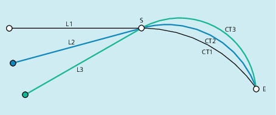

Die mit dem G-Befehl CT programmierte Kreisinterpolationsvariante ermöglicht die Interpolation von Kreisbögen, die tangential an das zuvor programmierte Konturelement anschließen.
Der Kreis wird dabei durch den Start- und Endpunkt und die Tangentenrichtung im Startpunkt definiert.
| Hinweis |
Tangentenrichtung im StartpunktDie Tangentenrichtung im Startpunkt eines CT-Satzes wird aus der Endtangente der programmierten Kontur des letzten Vorgängersatzes mit einer Verfahrbewegung bestimmt. Zwischen diesem Satz und dem aktuellen Satz können beliebig viele Sätze ohne Verfahrinformation liegen. |
S | Startpunkt |
E | Endpunkt |
M | Kreismittelpunkt |
r | Kreisradius |
t | Endtangente der programmierten Kontur des letzten Vorgängersatzes mit einer Verfahrbewegung |
Tangential an das Geradenstück 1-2 anschließende Kreisbahn S-E
Tangential anschließende Kreisbahnen hängen vom vorhergehenden Konturelement ab
| Kreisinterpolation mit tangentialem Übergang | |
Wirksamkeit: | modal | |
| Kreisendpunkt in kartesischen Koordinaten Abhängig von der aktuell gültigen Maßangaben-Einstellung | |
| Programmcode | Kommentar |
|---|---|
| N10 G0 Z100 | |
| N20 G17 T1 M6 | |
| N30 G0 X0 Y0 Z2 M3 S300 D1 | |
| N40 Z-5 F1000 | ; Werkzeug zustellen. |
| N50 G41 X30 Y25 G1 F1000 | ; Einschalten der Werkzeugradiuskorrektur. |
| N60 Y35 | ; Kontur fräsen. |
| N70 X60 Y70 | |
| N80 CT X80 Y55 | ; Kreisprogrammierung mit tangentialem Übergang. |
| N90 X90 Y35 | |
| N100 G1 X100 | |
| N110 Y25 | |
| N120 X30 | |
| N130 G0 G40 X0 Y0 | ; Ausschalten der Werkzeugradiuskorrektur. |
| N140 Z100 | ; Werkzeug freifahren. |
| N140 M30 |
| Programmcode | Kommentar |
|---|---|
| ... | |
| N110 G1 X23.293 Z0 F10 | |
| N115 X40 Z-30 F0.2 | |
| N120 CT X58.146 Z-42 | ; Kreisprogrammierung mit tangentialem Übergang. |
| N125 G1 X70 | |
| ... |
Siehe auch:
Kreisinterpolation mit tangentialem Übergang (CT, X... Y... Z...): Weitere Informationen